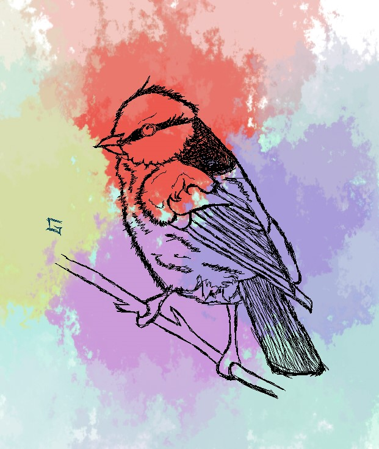
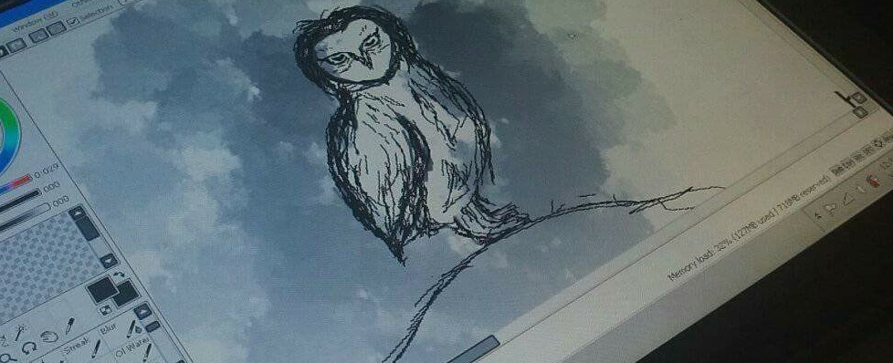

My name is Angelo Allanza, and I am the fastest man alive.
Just kidding, if you get the reference, points to you!
Moving on, I am taking a Bachelor of Science in Computer Engineering degree,
I'm currently in my third year of college, and I'm going to be in my 4th year this September!
Brief background, I also started doing art from time to time, even though I'm bad at it.
Someone special in my life inspired me to do it and also because she
really loves art and is great at it.
 
These artworks are the most recent ones that I've made, the first picture in 2019 and the second picture in 2021.
I used a software called PAINT TOOL SAI to draw these artworks, using the binary pen tool, with the brush size set to 1 pixel!
I like drawing birds, I guess.
Here are the kind of music I like that I mentioned in the ABOUT ME section.